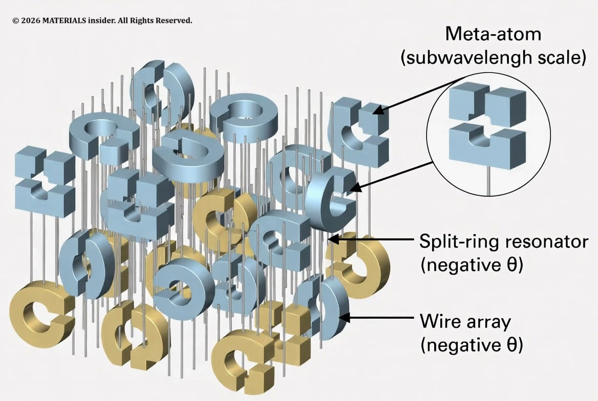
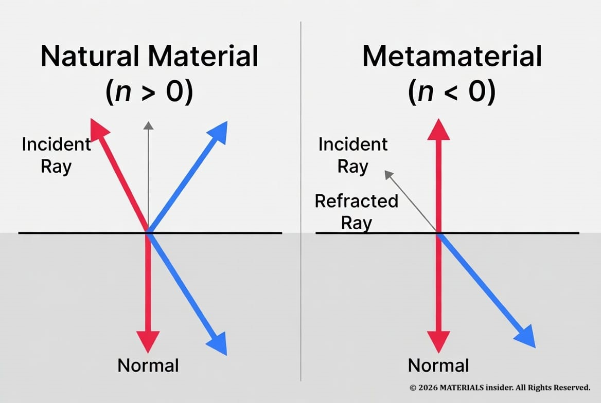
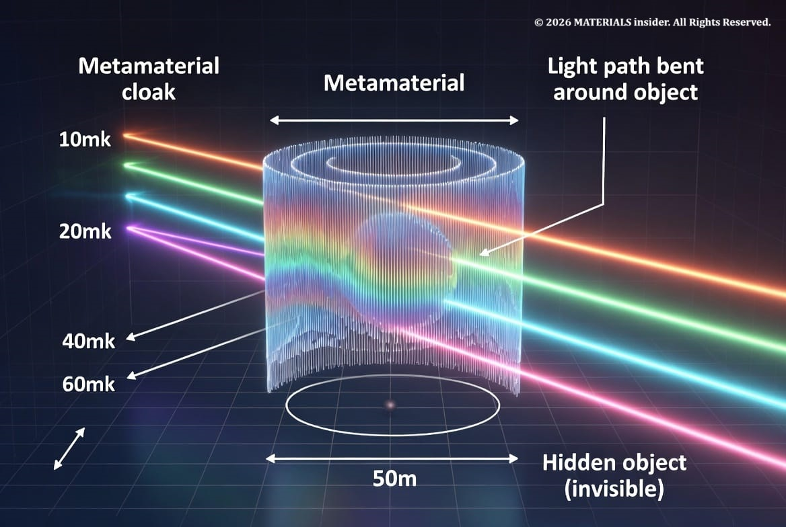

Impossible Engineering for Stealth and Cloaking : Metamaterials
Hey, imagine slipping on a jacket that bends light around you so perfectly that you vanish from sight. No green-screen trickery, no CGI — just physics doing something nature never intended. That’s the promise of Metamaterials, and scientists aren’t just dreaming about it anymore. These engineered materials are rewriting the rulebook on what’s possible with light, sound, and even heat.
If you’ve ever wished physics had cheat codes, metamaterials are basically that.
What Are Metamaterials, Really?
Normal materials get their properties from the atoms they’re made of silicon conducts, glass bends light a certain way, rubber absorbs vibrations. Metamaterials flip the script. Their crazy properties come from structure, not chemistry. Engineers build repeating patterns of tiny shapes (called meta-atoms) that are much smaller than the wavelength of whatever wave they’re trying to control.
For visible light, that means structures on the scale of tens to hundreds of nanometers. For microwaves or sound, the features can be millimeters or centimeters. The result? Materials that can have a negative refractive index, act as perfect absorbers, or even make waves go “backwards.”

How It Works at the “Atomic” Level (Meta-Atoms, Not Real Atoms):
This is where it gets wild. We’re not changing individual atoms like in some sci-fi nanobot movie. Instead, researchers design artificial “atoms” — tiny resonators — and arrange them in precise periodic patterns.
The classic building blocks:
- Split-ring resonators (SRRs): C-shaped or square metal loops that act like tiny LC circuits. They create a strong response to magnetic fields, flipping the sign of magnetic permeability (μ) to negative in a target frequency range.
- Wire or strip arrays: These respond to electric fields and can make electric permittivity (ε) negative.
When both ε and μ go negative at the same frequencies, the refractive index n becomes negative (n = –√(εμ) in the effective medium approximation). Light doesn’t just slow down or bend a little — it bends the opposite way from what Snell’s law predicts in natural materials. That’s negative refraction in action.
These meta-atoms are packed so densely and uniformly that, from far away, the whole thing behaves like a new homogeneous material with properties you’ll never find in the periodic table.

The Invisibility Cloak Dream (Transformation Optics):
Negative refraction alone is cool, but cloaking takes it further. In 2006, physicist John Pendry and colleagues proposed using transformation optics basically warping the coordinate system that light travels through. Instead of light hitting an object and bouncing back (making it visible), you design a cloak that smoothly steers the light rays around the object and lets them continue on their original path, undistorted.”
The cloak needs a gradient of refractive indices (some positive, some negative or near-zero) arranged in precise layers. Early demos worked in microwaves. Today, researchers have pushed into infrared and are inching toward visible light, though perfect broadband visible cloaking is still tough.

Real-World Applications That Already Matter:
This isn’t just lab magic. Metamaterials are already showing up in serious tech:
1. Stealth Technology:
Military aircraft and ships use metamaterial-inspired coatings and structures to absorb or redirect radar waves instead of just relying on angled shapes. Lower radar cross-section = harder to detect. Next-gen versions could actively adapt.
2. Superlenses & Imaging:
Conventional lenses hit the diffraction limit — you can’t resolve features smaller than about half the wavelength of light. Negative-index metamaterial lenses can beat that, opening doors to better medical imaging, nanolithography, and seeing viruses or molecules more clearly.
3. Perfect Absorbers:
Metamaterial perfect absorbers can suck up nearly 100% of light or microwaves at specific wavelengths. Applications include ultra-efficient solar cells, thermal emitters, sensors, and even stealth against infrared detection.
4. Acoustic Metamaterials:
Same idea, different waves. Engineered structures can create bandgaps that block specific sound frequencies, bend sound around objects (acoustic cloaking), or isolate vibrations. Think quieter car cabins, better concert hall acoustics, or earthquake-resistant building foundations that redirect seismic waves.
5. Wireless Communications & 5G/6G:
Metasurfaces (2D metamaterials) can steer beams precisely, improve antenna performance, reduce interference, and enable smarter signal routing. Expect them in future base stations and even reconfigurable intelligent surfaces on buildings.
6. Emerging: Thermal & Energy Control:
Recent work shows metamaterials can dramatically enhance or control near-field heat transfer at the nanoscale — potentially huge for cooling electronics or improving energy harvesting.

The Challenges (Because Nothing This Cool Is Easy):
Fabricating these at scale for visible light is brutal — you need nanoscale precision over large areas, and losses (energy absorbed as heat) kill the magic fast. Most current cloaks and negative-index devices work in narrow frequency bands. Making them broadband, low-loss, and cheap enough for real products is the next mountain to climb. 3D optical metamaterials are especially hard and many breakthroughs are still in 2D “metasurfaces”.
Active/tunable versions (using liquid crystals, phase-change materials, or electronics) are one promising fix — imagine a cloak you can turn on and off.
Why This Matters for the Future of Materials:
Metamaterials prove we’re no longer just discovering materials. We’re designing them from the bottom up. It’s the ultimate expression of atomic-scale engineering. If you geek out over pushing the limits of what matter can do (like we explored with fractional Fermi seas or diamond batteries on this site), this field is pure rocket fuel for the imagination.
We’re still early. True Harry Potter-level invisibility cloaks for everyday use? Probably decades away. But radar-stealth coatings, better lenses, silent rooms, and hyper-efficient energy devices? Those are already in labs and moving toward real products.
The line between “impossible” and “engineered” keeps getting thinner.
What part blows your mind most — the cloaking, the sound control, or the idea that we can literally make light take a wrong turn on purpose? Hit the comments and let’s geek out. And if you want to go deeper on how we manipulate waves at the smallest scales, check out some of our other deep dives on advanced materials.
Stay curious — the universe is way weirder (and more buildable) than we were taught in school. 🚀
Key Original Papers & References:
- Veselago, V. G. (1968). The electrodynamics of substances with simultaneously negative values of ε and μ. Soviet Physics Uspekhi, 10(4), 509–514.
- Pendry, J. B. (2000). Negative refraction makes a perfect lens. Physical Review Letters, 85(18), 3966–3969.
- Smith, D. R., Padilla, W. J., Vier, D. C., Nemat-Nasser, S. C., & Schultz, S. (2000). Composite medium with simultaneously negative permeability and permittivity. Physical Review Letters, 84(18), 4184–4187.
- Shelby, R. A., Smith, D. R., & Schultz, S. (2001). Experimental verification of a negative index of refraction. Science, 292(5514), 77–79.
- endry, J. B., Schurig, D., & Smith, D. R. (2006). Controlling electromagnetic fields. Science, 312(5781), 1780–1782.
- Schurig, D., Mock, J. J., Justice, B. J., Cummer, S. A., Pendry, J. B., Starr, A. F., & Smith, D. R. (2006). Metamaterial electromagnetic cloak at microwave frequencies. Science, 314(5801), 977–980.
These foundational works established the theory of negative-index media, the first experimental demonstrations, and the transformation-optics approach that made practical cloaking possible.
Share this article: